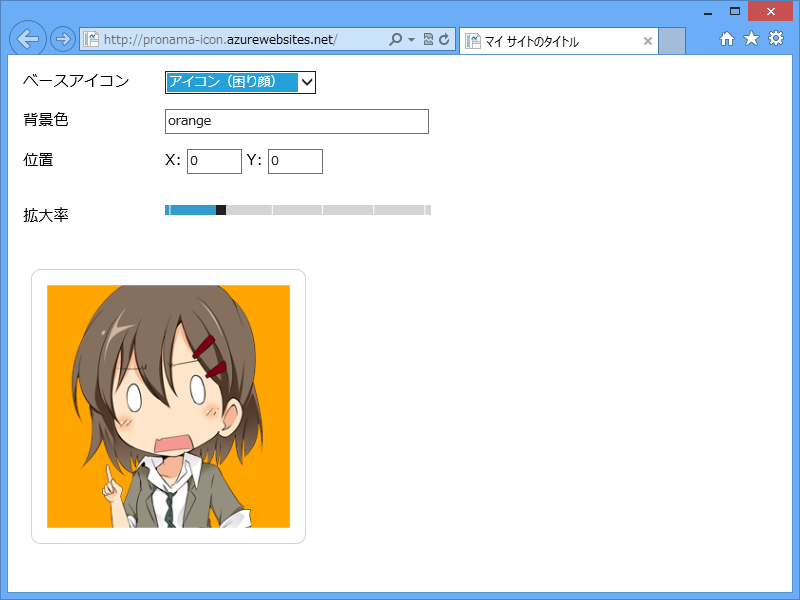
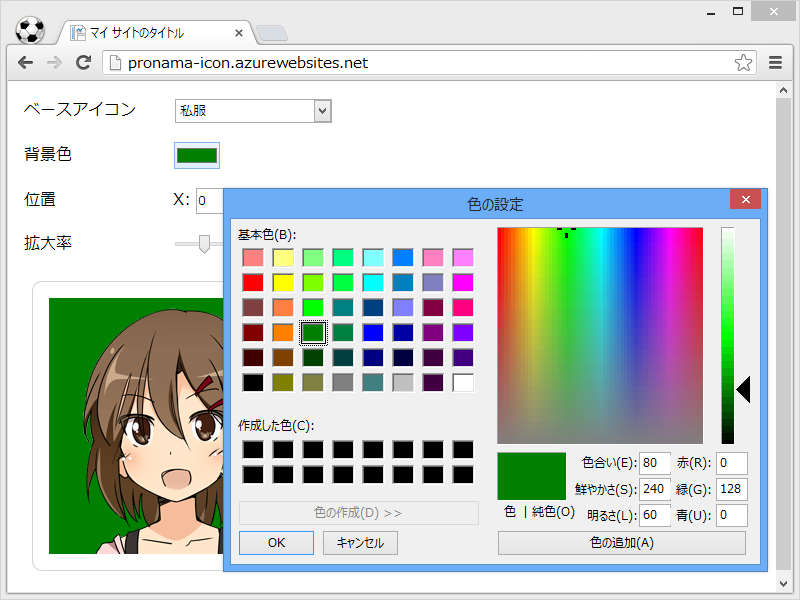
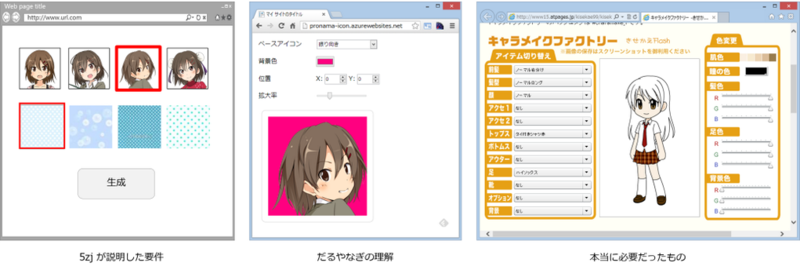

プロ生ちゃんアイコンジェネレーター
執筆日時：

@daruyanagi WebMatrix でアイコンジェネレーターつくってよー
2013-05-17 22:23:47 via Janetter to @daruyanagi
なんかアイコンファイルが ZIP で送られてきたので、テキトーに作った。アイコンジェネレーターってなにをどうすんだよ ( ﾟДﾟ)！
一応 Windows Azure Web Sites に置いてあるけど、ExpressWeb に移すかもしれない。
Google Chrome の場合

Google Chrome だと input[typr=color] が効くのでいい感じ。
Mozilla Firefox の場合
意外なことに Mozilla Firefox が一番ダメダメだった。 input[typr=range] すら使えない。Mozilla さん、Internet Explorer 10 に負けてますよ！
評価

気に入ってもらえなかったらしい。まぁ、徐々に改善するかもしれないし、放置するかもしれない。